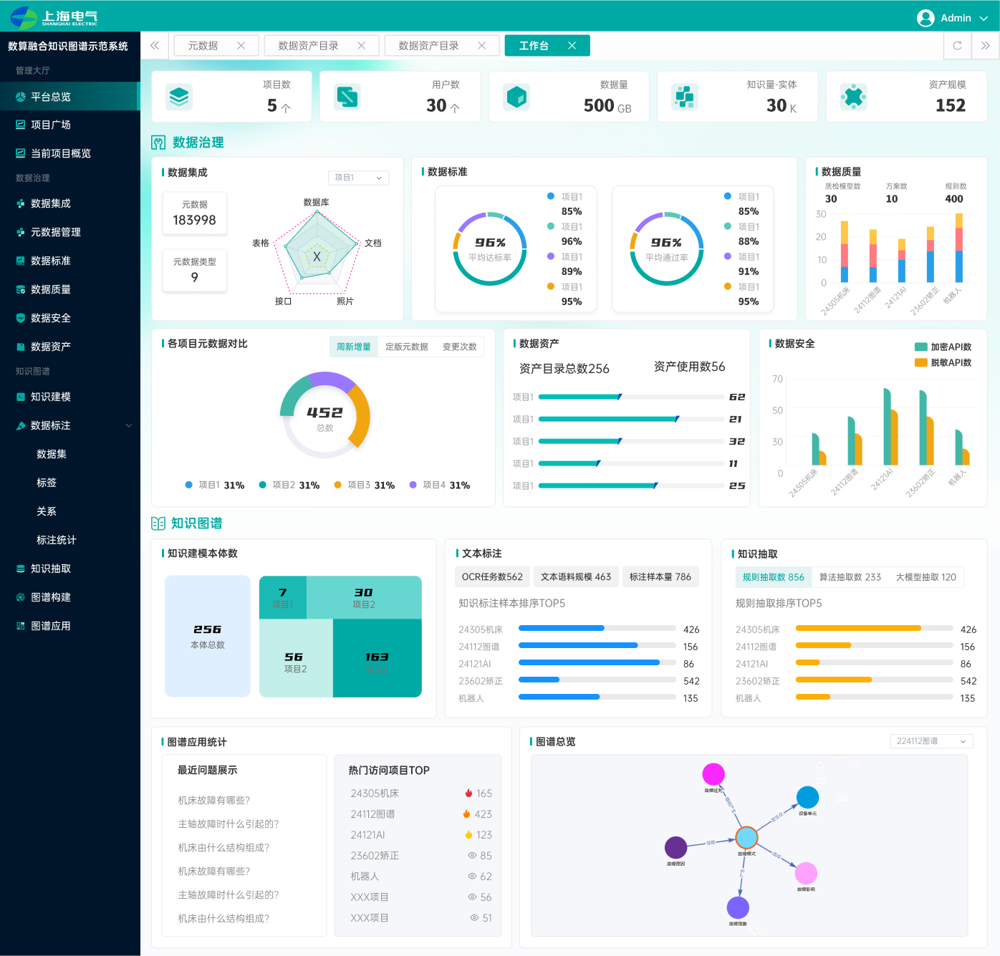
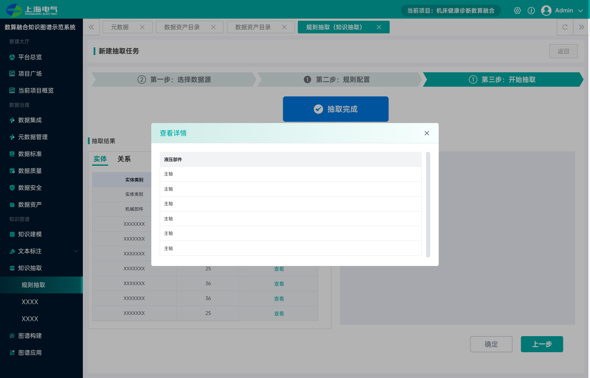
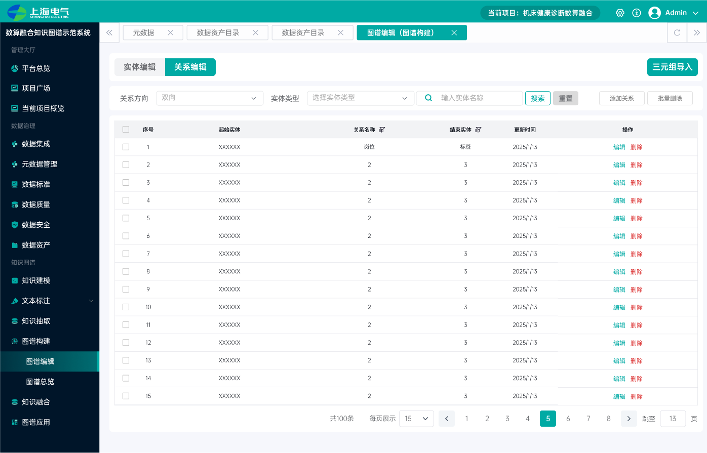
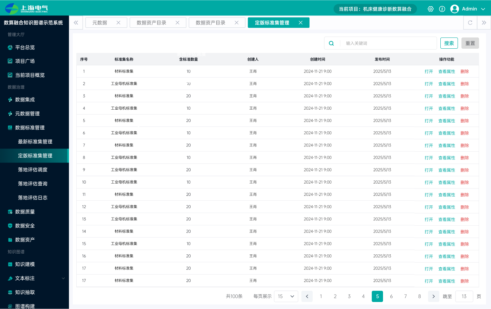

数据集成、元数据管理、数据标准、数据质量、数据安全、数据资产六大模块，让原始数据成为可治理的资产。
Foundation Case · Data + Knowledge Graph
把工业数据，一路治理成机器能推理的知识。
数算融合知识图谱示范系统，把「数据治理」与「知识图谱」打通成一条从原始数据到可用知识的链路。它是我做工业智能语义基座之前的地基。
01数据治理接入 · 元数据 · 标准 · 质量 · 安全 · 资产
02知识图谱建模 · 标注 · 抽取 · 构建 · 融合
03知识应用图谱总览 · 知识问答
Why It Matters
工业 AI 要能推理，先得有一套可信、结构化的数据与知识。
模型只看数值、不理解对象和关系，就给不出能进入业务的判断。这套系统先把散乱的工业数据治理成可信资产，再抽取、构建成实体与关系清晰的知识图谱，让机床健康诊断等场景的知识可被检索和提问——这套数据治理与知识工程的经验，直接支撑了后来的工业智能语义基座。
知识建模、数据标注、知识抽取、图谱构建、知识融合与图谱应用，把数据变成实体与关系清晰的图谱。
项目广场、项目概览、项目角色 / 成员 / 权限，让不同业务各自独立治理与建图。
My Role
产品定方向，我让这条高门槛的专业链路在界面上真正可用。
信息架构组织庞大的功能体量
把数据治理六大模块与知识图谱六大环节，组织进统一导航、多标签工作台与多项目层级，让用户不迷路。
流程与表单拆解向导、统一配置
知识抽取、质检方案、调度与落地评估等复杂流程做成分步向导；上百字段的表单建立一致的组件与交互规范。
高保真交付落地整套 UI
完成从图谱编辑、抽取结果到总览看板的高保真设计，并交付研发。
产品方向由团队确定。我作为该平台的交互设计师，负责整个系统从信息架构到高保真的交互设计落地，不把产品方向包装成个人单独定义。
The Platform
一屏看懂：从数据治理到知识图谱的全貌。
总览看板把项目、数据治理（集成、标准、质量、安全、资产）与知识图谱（本体、标注、抽取、图谱应用）的关键指标集中呈现，右下角即为机床故障模式的图谱总览。

Data → Knowledge
抽取与构建，是把数据变成知识的核心两步。
知识抽取用「选择数据源 → 规则 / 模型配置 → 开始抽取」的三步向导，从文档中产出实体与关系；抽取结果进入图谱编辑，实体、关系与三元组在这里被核对、编辑，构建成完整图谱。


Governance
数据标准，是让不同来源的数据对得上的地基。
标准集管理分为最新与定版两层，涵盖材料标准集、工业母机标准集等；配置标准属性后，通过落地映射与落地评估把标准真正落到数据上，让治理有据可依。

Outcome
一套支撑工业语义基座的数据与知识地基。
这是我第一次完整实践「如何把原始数据变成可信、可推理的知识资产」这条链路，系统建立了对数据治理 + 知识工程这一垂直领域的设计认知。作品集中不使用未经确认的效率或规模数字；总览看板中的数值为示范系统的示例数据。
它证明的，是我能吃透超大体量、强流程、重表单的专业 B 端产品，并把复杂的数据与知识工程组织成一套可用的交互——这套经验，也直接延续到了工业智能语义基座。